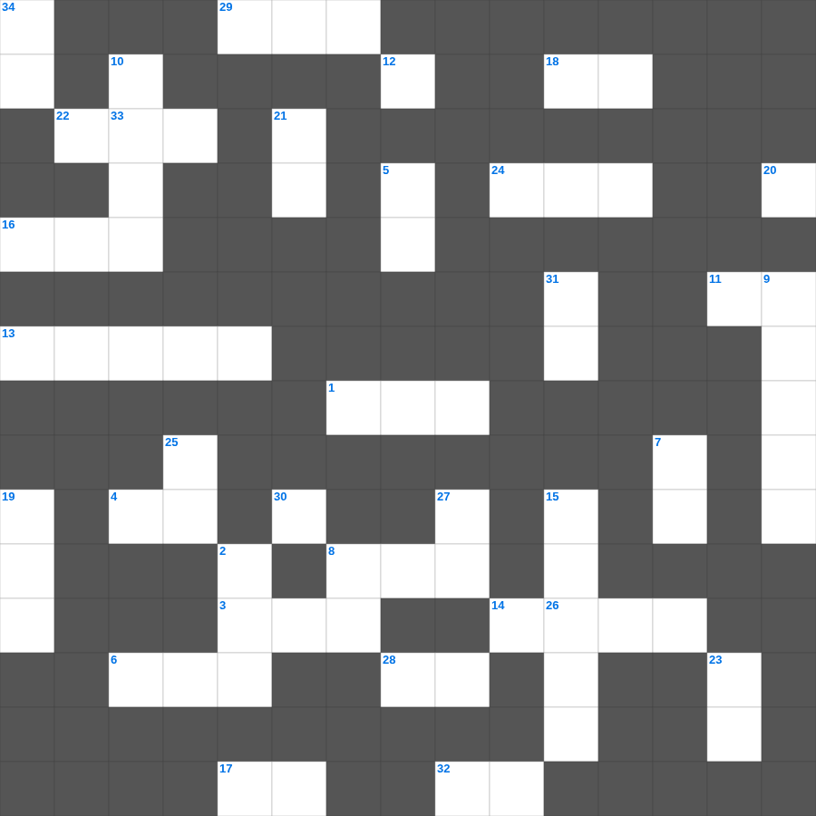

교회 안의 사역
📌 서비스 정의
십자가로세로는 교회 주보와 주일학교에서 사용할 수 있는 성경 기반 가로세로 퍼즐 서비스입니다. 성경 인물, 사건, 핵심 구절을 바탕으로 제작되었습니다. 온라인 풀이 및 인쇄 기능을 제공합니다.
오늘은 교회의 주요 내용을 담은 교회 낱말 퍼즐를 준비했습니다. 총 35개의 힌트가 있으며, 주일학교 교재나 성경공부 자료로 활용하기 좋습니다. 무료로 즐기는 교회 가로세로 퍼즐을 지금 바로 풀어보세요!

📝 가로 힌트
1. 예수님이 제자들의 발을 씻기신 일
3. 하나님과 화목하기 위해 드리는 제사
4. 노아 시대에 온 세상을 뒤덮은 물 심판
6. 예수님이 승천하신 산
8. 모든 제물을 태우는 곳
11. 극히 값진 이것 하나
13. 부활 후 도마에게 보여주신 부위
14. 베드로가 밤새 그물을 던졌으나 잡지 못했을 때 하신 일
16. 이스라엘의 유일한 여성 사사
17. 이것하는 자는 복이 있나니 저희가 위로를 받을 것임
18. 성령의 9가지 열매 중 두 번째
22. 초대 교회에서 구제를 위해 세운 일곱 이것
24. 매우 작은 씨앗의 대명사
28. 집을 나가 방탕하게 살다 돌아온 아들
29. 나는 알파와 이것이요
32. 기드온의 300 용사가 든 것: 항아리와 이것
33. 성령의 9가지 열매 중 첫 번째
📝 세로 힌트
2. 예수님이 변화되신 산
5. 예배의 시작을 알리는 종소리나 기도
7. 정해진 성경 본문을 읽는 것
8. 제물을 통째로 태워 드리는 제사
9. 구하라 그리하면 너희에게 이것을 주실 것이요
10. 범사에 이것하라 이는 그리스도 예수 안에서 너희를 향하신 하나님의 뜻이니라
12. 가인이 아벨을 죽인 도구(전통적 해석)
15. 그런즉 누구든지 그리스도 안에 있으면 새로운 이것이라
19. 보라 내가 만물을 이것하게 하노라
20. 잃어버린 한 마리 이것을 찾는 목자
21. 마지막 재앙: 처음 난 것들의 이것
23. 이것하게 하는 자는 하나님의 아들이라 일컬음을 받음
25. 예수님의 지상 직업
26. 제사장이 손발을 씻는 놋 그릇
27. 르호보암 왕 때 나라가 둘로 나뉨
30. 너희는 먼저 그의 나라와 그의 이것을 구하라
31. 모든 것 위에 믿음의 이것을 가지고
34. 너희 구원을 두렵고 이것으로 이루라
🧑🏫 교회 교육 자료 활용
이 퍼즐은 주일학교 교재 추천 자료로 활용할 수 있고, 주일학교 주보에 넣기 좋은 분량으로 구성되어 있습니다. 수업용 주일학교 교안에 활동지로 붙이거나, 예배 후 복습용 주일학교 공과교재로 바로 사용할 수 있습니다.
🏷️ 키워드
교회 낱말 퍼즐, 교회, 십자가로세로, 성경퀴즈, 말씀퀴즈, 가로세로퍼즐, 주일학교 교재 추천, 주일학교 주보, 주일학교 교안, 주일학교 공과교재